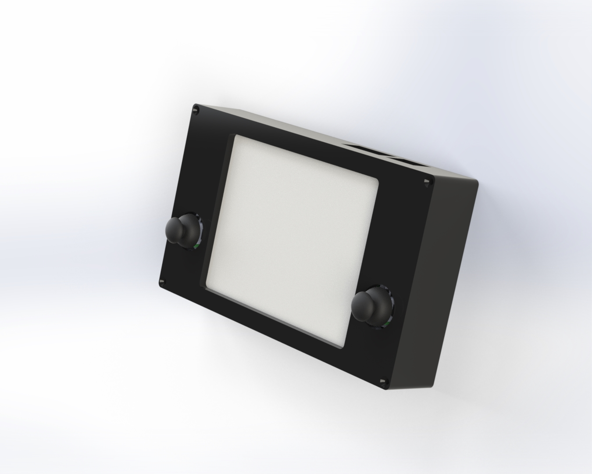
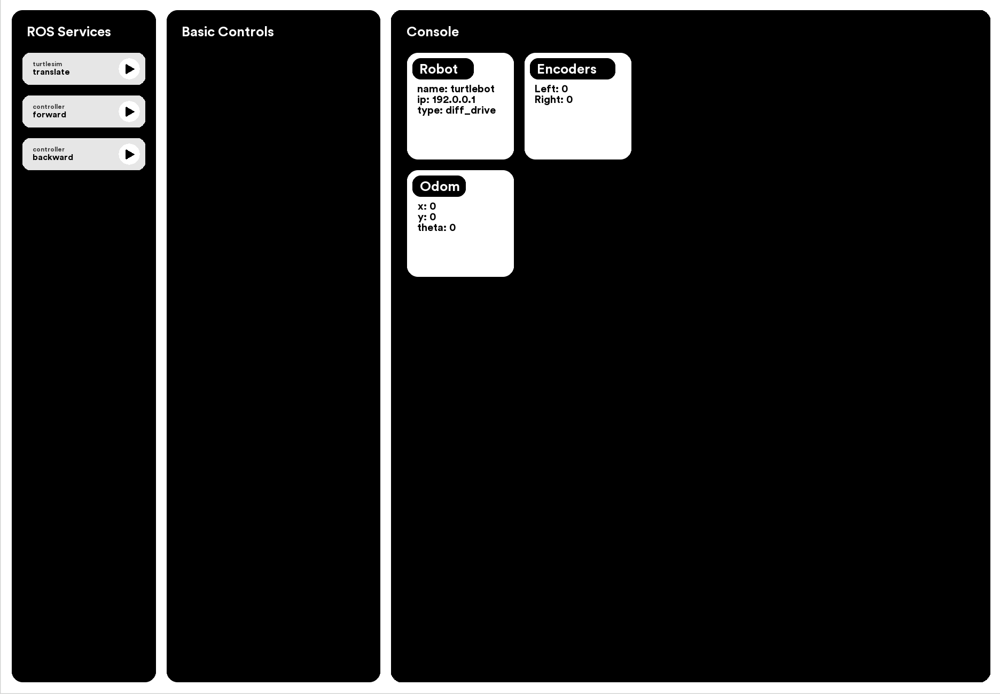

The ROS Controller was designed as part of my Winter Project in the Northwestern MSR program. For this project, the goal was to create a device that could be used to help developers debug ROS applications quickly and easily.
The controller can be easily connected to any ROS device by connecting both devices to the same network. The controller will then subscribe to useful debug information (whatever the developer would like) and can display that information through information modules on its e-ink display.
The user can run ROS Services easily using the ROS Service menu on the left of the screen of the controller. Clicking on the play button near each service will run that service with an autocompleted (\t) service parameter, and clicking on the name of the service allows the user to run the service with a parameter they input. The left joystick allows the user to easily send cmd_vel commands to any connected robot, as seen in the video above.
The device runs Raspberry OS, and the left joystick can be configured to act as a mouse controller, so that the developer can use the full OS. A mouse and keyboard can also be connected using a wireless adapter. The whole operating system runs off of the raspberry pi 4.
The controller was designed to be easily modifyable -- each layer is laser cut and they can be swapped with new layers to add new components in the future.
The ROS controller allows a debugger to see a whole bunch of useful debugging information without having to access a computer. This could be helpful for people programming robots with existing libraries (like motion planning) or for developers who are working on a new library. The controller can also be configured to display a bunch of different kinds of data, and to control many different functions on the robot.
The ROS controller runs off of a Raspberry Pi 4 with 4 GB of RAM. The image outputted from HDMI0 is sent through an HDMI interface board from waveshare to a 7.8" E-ink display which is also from waveshare. Information about the BOM of the project can be found in the Github README. A logitech keyboard and trackpad was used to allow easy, wireless input to the remote. Two sparkfun Qwiic joysticks were used to provide user input. These can be used to control the robot and the mouse on the screen of the controller.
The software on the ROS controller runs two main nodes, controller and interface. The controller node is responsible for any publishing done by the controller, and is currently set up to publish cmd_vel twists using input from the sparkfun joysticks. The interface node is responsible for displaying subscribed data to the user using a GUI designed by me in pygame.